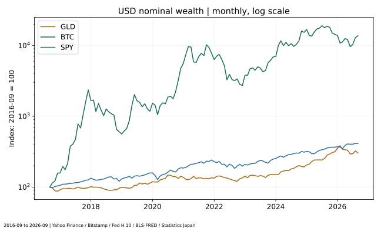
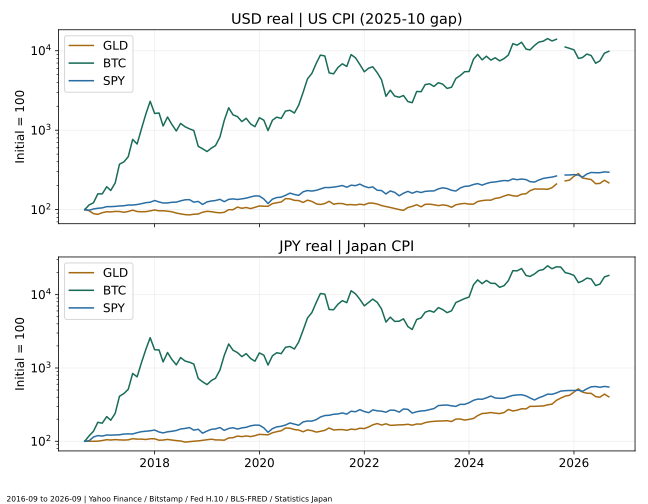
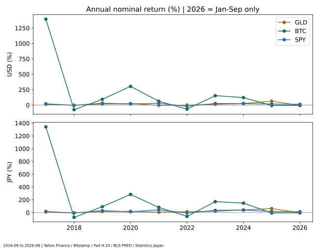
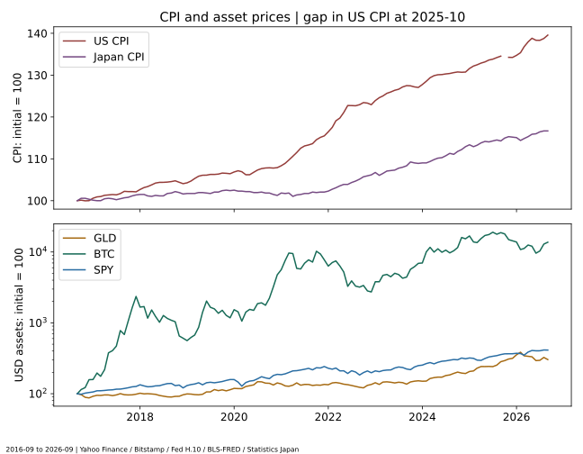
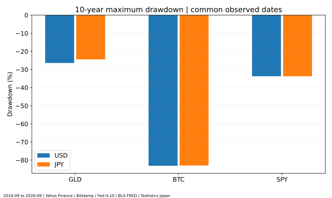
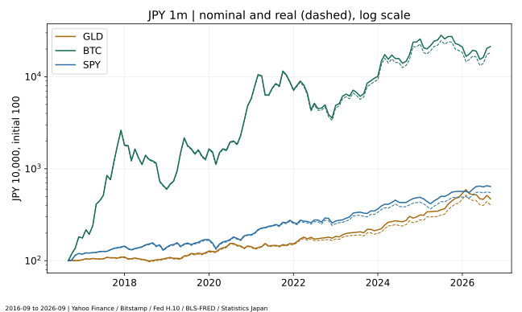

金・ビットコイン・株式、インフレに強い資産はどれ？
過去データと実質リターンで徹底比較
公開・更新：（日本時間）
著者・編集：トピック基地／データ取得：2026年11月6日（UTC、日本時間11月7日）／出典再確認：2026年11月7日
物価が上がると、同じ金額で買えるものは少なくなります。ただし、値上がりした資産をそのまま「インフレに強い」と呼ぶこともできません。本稿は金ETFのGLD、現物BTC、米国株式ETFのSPYを、同じ期間の米ドル・円の名目リターンと、それぞれの国のCPIで調整した実質リターンで比較します。短期の下落や高インフレ年の成績も確かめます。
- 過去10年の高いリターンと、物価上昇に短期で連動する性質は別です。
- 米ドルでは購買力を減らしても、円安によって日本円の結果が異なる年があります。
- 金にも下落があり、BTCには大きな元本損失の可能性があります。株式も物価上昇を必ず利益に転嫁できるわけではありません。
一般的な情報と条件を限定した分析であり、特定資産の購入や将来の利益を勧めるものではありません。過去実績と予測を混同せず、編集・訂正方針もご確認ください。
1. インフレとは？現金の購買力が下がる仕組み
インフレとは、広い範囲の商品やサービスの価格が継続的に上昇することです。ある一つの商品の値上げと、経済全体の物価上昇は区別します。CPI（消費者物価指数）は、家計が購入する財・サービスの価格変動を測る統計です。ただし、平均的な支出構成を使うため、各家庭の実感と完全には一致しません。［1］［2］
例えば、物価だけが1年間で3%上がり、現金100万円に利息が付かない場合、開始時点の物価で測った購買力は100万円÷1.03、約97万874円です。現金の額面が減ったわけではなく、買える量が減っています。これは説明用の仮定で、実測のインフレ率ではありません。
預金を持つ目的には、支払いや緊急時の資金確保もあります。物価上昇への対応だけで現金を全てリスク資産へ移すと、必要な時点の値下がりで生活資金が不足する可能性があります。本稿の100万円モデルは預金金利や利息の税金を比較したものではありません。
2. 金・BTC・株式の基本的な違い
| 対象 | 価値・収益の考え方 | 今回の系列 | 注意点 |
|---|---|---|---|
| 金 | 宝飾・工業・投資・準備資産等の需要。金そのものは配当を生まない | 米国上場GLDの調整後市場価格 | 地金価格そのものではなく、ファンド経費や市場価格と純資産価値の差を含む |
| ビットコイン | 供給ルール・利用や保有需要・ネットワークへの信頼等 | Bitstamp BTC/USD現物終値 | 単一取引所。株式のような利益分配請求権はなく、保管・流出・規制リスクもある |
| 株式 | 企業の事業・利益への持分。配当と値上がりが収益源になり得る | S&P500連動の米国ETF SPY、分配金調整後市場価格 | 指数そのものでも、日本の投資信託でもない。米国大型株への偏りがある |
価格が上がった理由、保有中の費用、税金の仕組みは異なります。資産名だけで比べず、どの商品のどの価格を使っているかを固定することが、再現できる比較の出発点です。
3. 金がインフレ対策と呼ばれる理由と、その限界
金は通貨とは異なる実物資産で、投資以外の需要もあります。購買力の保全を期待して保有されることがありますが、現在のインフレ率だけで金価格が決まるわけではありません。World Gold Councilの研究は需要や市場環境を説明し、シカゴ連銀の研究は実質金利や期待インフレなど複数の要因を検討しています。これらは特定の将来価格を保証するものではありません。［3］［4］
現物・ETF・先物は同じ投資ではない
地金には売買スプレッド、保管・保険などの費用が関係します。ETFや金を保有する信託には運営経費、価格と純資産価値の乖離等があります。先物は満期や証拠金を持ち、保有を継続するための限月乗換えによって、現物価格の変化とは収益がずれる場合があります。
本稿のGLDは、金地金の価格から信託の経費を差し引いた動きへの連動を目指す商品で、調査時の公式資料の経費率は年0.40%です。売買価格を分析するため、過去の費用をもう一度年0.40%ずつ差し引いていません。また、この現在の経費率が全期間ずっと不変だったと仮定して計算したわけでもありません。［5］
4. BTCが「デジタルゴールド」と呼ばれる理由
ビットコインは、ブロック補助金が210,000ブロックごとに半減する供給ルールなどから、希少性を意識して金と対比されることがあります。ただし、新規発行の制約と市場の需要は別です。供給ルールがあることだけで、物価の上昇率に応じてBTC価格が上がる仕組みにはなっていません。［6］
「デジタルゴールド」は役割を期待する呼び方であり、金と同じリスク・相関・価格安定性が実証されたという意味ではありません。本稿でも、長期では大きく値上がりしていても、短期の高インフレ年に下落した例を確認できます。第8号の暴落と回復期間の比較も併せて読むと、保有を続ける難しさが分かります。
5. 株式と企業利益・物価上昇の関係
企業が販売価格を上げ、売上や利益を伸ばせれば、長期的に株式価値を支える場合があります。しかし、原材料・賃金・金利の上昇が利益を圧迫したり、価格転嫁で販売量が落ちたりすることもあります。インフレが起きたら、全企業の利益と株価が同じ割合で増えるわけではありません。
SPYはS&P500の価格と配当利回りの動きへの連動を目指す米国ETFです。調査時の公式経費率は年0.0945%。本稿は分配金調整後の市場価格比率を再投資の近似として使います。配当なしの価格指数と取り違えず、実際の日本居住者の税引後再投資とも区別します。［7］全世界株式との違いは第6号で補足しています。
6. データと比較条件：月次の購買力、日次の下落リスク
| 主比較 | 2016-09-30〜2026-09-30の10年と、2021-09-30〜2026-09-30の5年。月次121点／61点、120／60か月の期間でCAGRを計算 |
|---|---|
| GLD・SPY | Yahoo FinanceのUSD調整後終値。米国市場の取引日。GLD分配金0件・SPY40件、両者とも対象期間に分割イベントなし |
| BTC | 第8号で取得・検証したBitstamp BTC/USD日足close。UTC日足の開始日ラベル、終値区切りは翌日00:00 UTC。別の価格提供元を途中で接続しない |
| 為替 | Federal Reserve H.10のJPY/USD（1米ドル当たり円）、NY正午。ETF終値の時刻やBTCの終値時刻とは一致しないため、完全に同時刻で売買できる収益ではない |
| 月末抽出 | 価格3系列と為替が全て観測された同じ日付のうち、その月の最後の日。休場・欠測を前値で埋めない |
| 日次リスク | 10年の共通観測日2,485点。BTCの土日や為替欠測日も含めた全暦日の最悪下落ではない |
| 米国物価 | BLSのCPI-U全国都市平均・総合・季節調整なし（FRED CPIAUCNS、原系列CUUR0000SA0）、1982–84年=100 |
| 日本物価 | 統計局／e-Statの全国総合・季節調整なし、2025年=100の公式長期接続指数。旧基準を無調整で継ぎ足さない |
月次CPIはその月の物価を表し、月末の特定時刻の価格ではありません。同じ暦月の資産観測値へ対応させた事後的な購買力比較です。CPIが公表される前からその値を知って売買できた、というバックテストではありません。個々の家庭の支出構成や国内取引の実際の為替・スプレッドも再現していません。
米国CPIの2025年10月は欠測：BLSは政府閉鎖に伴う調査中断を説明しており、FREDとBLS原データの両方で欠測を確認しました。本稿では補間せず、当該月のUSD実質系列とCPIの線を途切れさせています。5年・10年の端点と年末のCPIは観測できるため、その期間全体の計算は可能です。日本CPIと混ぜて穴埋めはしません。［8］
SPYは分配金と直前終値から調整係数を独立に再構成し、調整後価格との相対誤差が1×10⁻⁵未満であることを確認しました。取引手数料・個人の配当源泉税・売却税は反映しません。GLDとSPYのファンド経費は市場価格等の実績に内包されるため、現在の経費率を再度控除しません。

7. 過去5年・10年：名目と実質を4つに分けて比較
USD名目は資産のドル建て変化、USD実質は米国CPIで調整した購買力です。JPY名目は為替換算後、JPY実質はさらに日本CPIで調整した購買力です。実質の100万円評価額は、それぞれの開始月の日本の物価で測った金額で、将来引き出せる現金額ではありません。
| 期間・資産 | USD名目 | 米国CPI調整USD実質 | JPY名目 | 日本CPI調整JPY実質 | 100万円：名目 | 100万円：開始月購買力 |
|---|---|---|---|---|---|---|
| 10年・金ETF GLD | 203.12% 年率 11.73% | 117.19% 年率 8.06% | 370.96% 年率 16.76% | 303.68% 年率 14.98% | 4,709,577円 | 4,036,780円 |
| 10年・BTC | 13638.65% 年率 63.60% | 9744.17% 年率 58.24% | 21245.74% 年率 70.97% | 18196.35% 年率 68.36% | 213,457,408円 | 182,963,493円 |
| 10年・株式ETF SPY | 312.86% 年率 15.23% | 195.83% 年率 11.46% | 541.46% 年率 20.43% | 449.82% 年率 18.58% | 6,414,592円 | 5,498,222円 |
| 5年・金ETF GLD | 131.91% 年率 18.32% | 88.80% 年率 13.55% | 227.06% 年率 26.74% | 186.10% 年率 23.40% | 3,270,637円 | 2,861,007円 |
| 5年・BTC | 90.63% 年率 13.77% | 55.20% 年率 9.19% | 168.85% 年率 21.87% | 135.18% 年率 18.65% | 2,688,514円 | 2,351,792円 |
| 5年・株式ETF SPY | 90.00% 年率 13.70% | 54.69% 年率 9.12% | 167.97% 年率 21.79% | 134.40% 年率 18.57% | 2,679,653円 | 2,344,041円 |
このスナップショットでは、10年と5年で結果の並びが変わります。10年のBTCの大きな値上がりを、今後のインフレ対策の優位性に読み替えることはできません。開始時点の価格水準、市場の発展、為替や金利など、物価以外の変化も全て含む実績だからです。
5年では金ETFが他の2系列を上回った一方、10年では別の順序になりました。これは取得した期間の結果であり、どの5年・10年を選んでも同じになるという意味ではありません。保有期間が長ければ、金・BTC・株式のどれかが必ず勝つとは結論しません。
8. 実質リターンの計算：物価上昇を差し引くには
使う式は、実質リターン＝（1＋名目リターン）÷（1＋期間全体のインフレ率）−1です。期間全体のインフレ率はCPI終点÷CPI始点−1で計算します。単に年率リターンから累積インフレ率を引いたり、10年の投資へ直近1年の物価上昇率だけを使ったりしません。
例えば名目5%、物価3%という仮定なら、実質は1.05÷1.03−1で約1.94%です。「5−3=2%」は近似であり、正確な計算式とは異なります。実質CAGRも、実質の期間倍率を10年または5年の累乗根にしてから1を引きます。
米国CPIと日本CPIは基準年も対象となる家計・品目構成も異なります。指数の絶対水準をそのまま比べるのではなく、同じ系列の始点と終点の比を使います。日本CPIは2025年基準への公式接続系列を使用し、基準変更を実際の物価下落と取り違えません。［2］［9］

9. 年別騰落率：累積成績だけでは見えない変動
年別は前年12月の最終共通観測日から当年12月の最終共通観測日までを計算します。CPIは12月同士の比で、年平均の前年比とは異なります。例えば2022年は2021-12-30→2022-12-30です。公式ETFの暦年実績と端点が一致するとは限りません。2026年は1〜9月の途中経過で、1年の実績へ年率換算していません。
| 年 | 米国CPI上昇 | 日本CPI上昇 | 金ETF GLD | BTC | 株式ETF SPY |
|---|---|---|---|---|---|
| 2017 | 2.11% | 1.02% | 12.81% / 8.86% | 1394.47% / 1342.13% | 21.71% / 17.44% |
| 2018 | 1.91% | 0.23% | -1.94% / -4.54% | -74.24% / -74.93% | -4.57% / -7.10% |
| 2019 | 2.29% | 0.79% | 17.86% / 16.75% | 94.09% / 92.27% | 31.22% / 29.99% |
| 2020 | 1.36% | -1.11% | 24.81% / 18.52% | 304.45% / 284.06% | 18.33% / 12.36% |
| 2021 | 7.04% | 0.79% | -4.80% / 6.25% | 62.63% / 81.51% | 29.05% / 44.04% |
| 2022 | 6.45% | 4.03% | -0.09% / 14.34% | -64.79% / -59.70% | -18.38% / -6.59% |
| 2023 | 3.35% | 2.58% | 12.69% / 20.48% | 153.40% / 170.91% | 26.18% / 34.90% |
| 2024 | 2.89% | 3.67% | 26.66% / 41.44% | 121.96% / 147.86% | 24.89% / 39.46% |
| 2025 | 2.68% | 2.02% | 63.68% / 63.08% | -6.30% / -6.64% | 17.72% / 17.29% |
| 2026年1–9月 | 3.98% | 1.29% | -3.90% / -3.63% | -4.50% / -4.22% | 12.71% / 13.03% |

10. 高インフレ年に強かったのは？事後の客観的基準で確認
2017〜2025年の完全な暦年を対象に、米国は12月CPI前年比4%以上、日本は2%以上と定め、該当年を抽出しました。公表された指数値の比で判定するため、丸めた公式前年比とわずかに異なる場合があります。この水準は比較のための編集上の基準で、公的な「高インフレ」の定義ではありません。
年末のCPIでその年を分類し、同じ年の資産リターンを見る事後分析です。年初にその年のインフレ率を知って投資する戦略ではなく、「高インフレという情報が出た翌日以降」の収益でもありません。2026年は未完全年なのでこの抽出に含めません。
| 年 | 米国≥4% | 日本≥2% | 金ETF GLD | BTC | 株式ETF SPY |
|---|---|---|---|---|---|
| 2021 | 米国 | — | -11.06% / 5.42% | 51.94% / 80.09% | 20.57% / 42.91% |
| 2022 | 米国 | 日本 | -6.15% / 9.91% | -66.92% / -61.26% | -23.33% / -10.21% |
| 2023 | — | 日本 | 9.04% / 17.45% | 145.18% / 164.10% | 22.08% / 31.50% |
| 2024 | — | 日本 | 23.10% / 36.44% | 115.72% / 139.09% | 21.38% / 34.53% |
| 2025 | — | 日本 | 59.41% / 59.85% | -8.75% / -8.49% | 14.65% / 14.97% |
本稿の2022年は、米国の物価が上がった一方で、3系列のUSD実質リターンは全てマイナスでした。同じ金ETFでもJPY実質ではプラスになり、通貨と物価の組合せで結論が変わります。この違いは「金がいつでも安全」「BTCが必ずインフレを相殺する」という説明に注意が必要なことを示します。
長期的な購買力維持、短期的なインフレ率との連動、市場急落時の耐性は別の検証課題です。本稿はインフレ・サプライズとの相関係数や各要因の因果寄与率を推計していません。高インフレ年の標本も少なく、表から一般的な予測モデルを作れるとは主張しません。

11. 最大ドローダウン：途中でどれだけ下がったか
最大ドローダウンは、各観測時点までの最高値に対する、その後の最も大きな下落率です。期間の開始から終了までプラスであっても、途中の含み損が小さいとは限りません。以下は価格・為替が揃う共通観測日で測った名目値です。実質値や年別マイナス率とは異なります。
| 期間・資産 | USD下落率 | USDピーク→底 | JPY下落率 | JPYピーク→底 | 観測数 |
|---|---|---|---|---|---|
| 10年・金ETF GLD | -26.40% | 2026-01-29 → 2026-07-16 | -24.39% | 2026-03-02 → 2026-08-03 | 2485 |
| 10年・BTC | -83.13% | 2017-12-18 → 2018-12-14 | -82.98% | 2017-12-18 → 2018-12-14 | 2485 |
| 10年・株式ETF SPY | -33.72% | 2020-02-19 → 2020-03-23 | -33.74% | 2020-02-20 → 2020-03-23 | 2485 |
| 5年・金ETF GLD | -26.40% | 2026-01-29 → 2026-07-16 | -24.39% | 2026-03-02 → 2026-08-03 | 1244 |
| 5年・BTC | -76.66% | 2021-11-08 → 2022-11-21 | -71.47% | 2021-11-08 → 2023-01-03 | 1244 |
| 5年・株式ETF SPY | -24.50% | 2022-01-03 → 2022-10-12 | -23.70% | 2025-01-23 → 2025-04-21 | 1244 |
土日を取引するBTCについても、他系列と揃えるため共通観測日だけを使います。そのため、全暦日を使う第8号の最大下落率と異なる場合があります。共通観測日でもBTCには大きな下落があり、10年の高い累積成績だけでは保有中の負担を表せません。
金ETFも対象期間中に下落しており、価格の安定が保証される資産ではありません。CPIで購買力を調整しても、取引所や金融商品の信用・流動性・保管リスクが消えるわけではありません。

12. 金利上昇は各資産へどう影響する？
物価が上がる局面では、金融政策や市場の金利予想も変化し得ます。金利が上がると、利息を生む資産を選ぶ機会費用、借入費用、企業の利益見通しや将来利益の現在価値が変わります。配当を生まない金やBTCも、資金需要や他の投資先との比較の影響を受け得ます。
FRBは2022年3月16日に政策金利の目標レンジ引上げを公表しました。ただし、本稿の2022年の成績を、その決定一つで説明することはできません。期待された政策と実際の決定の差、景気、企業業績、暗号資産市場の信用問題など、同じ時期に複数の要因があり得るためです。［10］
実質金利は一般に名目金利と期待インフレの関係で考えるため、現在のCPI上昇率そのものとも別です。本稿のCPIによる事後の購買力調整を、投資時点の期待実質金利の測定と呼んではいません。
13. 円高・円安で日本人投資家の結果は変わる
円換算の倍率は、USD資産価格の倍率×ドル円（円／ドル）の倍率です。ドル円が上がる円安は、他の条件が同じなら円建て評価額を押し上げ、円高は押し下げます。米ドル資産が横ばいでも、円換算では損益が出ることがあります。
円建て名目の上昇には為替の寄与も含まれるので、資産そのもののUSDリターンと分けて表示しています。さらに日本の家計の購買力を考える際は、日本CPIで調整します。米国CPIで調整したUSD実質リターンを、そのまま日本人の実質利益と呼びません。
為替はH.10のNY正午の観測を使用します。ETFの米国引けやBTCのUTC終値と同時ではなく、実際の証券会社の約定為替とも異なります。為替ヘッジの費用や効果、売買スプレッドは計算外です。為替ヘッジ付き商品へ本結果をそのまま当てはめないでください。［11］
14. 100万円投資の推移：額面と開始月の購買力
各期間の開始時に100万円を一括で投じたとする比較です。円換算の資産倍率に100万円を掛けたものが名目評価額、それを日本CPIの期間倍率で割ったものが開始月の購買力です。最終値は比較表へ掲載し、1円へ四捨五入しています。追加積立・引出し・為替ヘッジ・個人の税金や売買費用は含めません。数量の端数を許す指数化モデルで、整数口数で購入した場合の残余現金までは再現していません。

BTCの10年間の倍率が大きく見えても、今から投資して同じ金額になることを意味しません。実際には途中の大幅下落に耐えられるか、資金が必要になる時期、保管方法や税務が重要です。将来の利回りをこの過去CAGRに固定したシミュレーションは作っていません。
15. 長期保有のメリット・リスクと分散の考え方
長期保有は短期の売買判断を減らし、企業利益や経済活動の長期的な変化に参加する方法になり得ます。しかし、時間が経てば損失が必ず消えるとは限りません。保管・制度・技術・市場構造も変わります。名目の元値へ戻っても、物価上昇により購買力が戻らない場合があります。
分散では、値動きの理由が異なる資産を組み合わせる意味を考えます。ただし、危機時には同時に下がる可能性があります。本稿は特定の最適配分を算出しておらず、必ず損失を減らせる比率を示していません。生活防衛資金、使う時期、負債、全体の保有割合を先に整理することが大切です。
金・BTC・米国大型株の3つだけで全ての投資対象を網羅してはいません。預金・債券・全世界株式等も役割が異なります。資産の仕組みは第4号のBTCと株式投資、米国集中と世界分散は第6号で補足しています。
16. 新NISAで選ぶ際の注意点
NISAは対象商品を適格な口座で保有する際の税制上の仕組みで、元本や購買力を保証する制度ではありません。金地金やBTC現物をそのままNISA口座へ入れる制度でもありません。金連動ETF・投資信託や株式商品についても、枠の要件・対象リスト・取扱金融機関を確認する必要があります。［12］［13］
GLD・SPYは分析用の代理系列であり、このページで個別のNISA対象可否や金融機関の取扱いを認定していません。海外資産の分配金に係る外国税が、NISAで自動的に全てなくなるわけでもありません。本稿の税引前モデルと個人の受取額は異なります。［15］第5号の新NISA入門で、制度の枠と商品のリスクを分けて確認してください。
現物金、金関連商品、株式、暗号資産で税の取扱いは同一ではありません。具体的な取引の申告は商品・所得・口座等によるため、第7号の税金解説や最新の公式案内を確認してください。本稿の比較には個別の税額計算を持ち込みません。
17. よくある質問
- Q. インフレなら金を買えば必ず儲かりますか？
- 保証されません。金利・為替・需要なども関係し、金ETFにも下落局面があります。本稿では米ドルと円の実質結果も異なりました。
- Q. ビットコインの供給が限られるなら物価上昇に連動しますか？
- 供給ルールと価格の決定は別です。需要は確定せず、高インフレ年でも大きく下がった例があります。
- Q. 実質リターンは口座から引き出せる金額ですか？
- 購買力を比較する指標です。実質の円評価額は開始月の物価で測った金額で、現実の引出額や税引後額ではありません。
- Q. なぜ2026年11月までの価格を使わないのですか？
- 比較するCPIが公表済みの共通終点を2026年9月に固定したためです。価格だけを後まで延ばすと、異なる期間の比較になります。
- Q. 米国CPIの欠測月はどうしましたか？
- 2025年10月は原系列でも欠測なので、USD実質とCPIのグラフを途切れさせました。端点が観測できる期間全体の計算は行い、補間した数字は使っていません。
- Q. 下落率が第8号と違うのは計算ミスですか？
- 第8号はBTCの全暦日、この比較はETF・為替と同じ共通観測日です。対象期間・観測日の違いを明示し、それぞれ独立再計算しています。
- Q. 100万円を3資産へ分けた成績ですか？
- 各資産へそれぞれ100万円を投じた別々の比較です。3資産混合ポートフォリオや最適配分の実績ではありません。
まとめ：インフレへの強さを一つの順位で決めない
購買力を維持できたか、短期の物価上昇と連動したか、大幅な下落を避けられたかは別の問いです。通貨・CPI・期間・配当と費用を揃えた比較でも、開始時点や保有中のリスクによって意味が変わります。どれか一つが必ず有利という結論ではなく、資金の目的に合う組合せを考える材料として利用してください。
データと再現手順
月次比較CSV、共通日次CSV、CPI履歴、結果・グラフ入力JSON、取得日時・URL・ハッシュ、独立監査結果を公開します。計算コード、独立監査コード、保存原データからの再構成コードと計算条件・コマンドも参照できます。
提供元が過去データを訂正する可能性があります。再取得後の値が違う場合、監査済みファイルを黙って置き換えずに差を調べます。取得原応答は圧縮して保存し、BTCは第8号で公式APIから取得したスナップショットを再利用しています。
参考資料
調査・取得日：2026年11月6日（UTC）。価格主比較2016-09〜2026-09、CPI照合用2015-09〜2026-09。確認記録は一次資料・参考資料の監査記録へ保存します。
- BLS：CPIのFAQ — 対象・季節調整・指数の用途。
- 統計局：CPI結果と2025年基準長期接続系列への案内 — 月次物価と基準改定。使用した全国中分類指数CSVの総合列。
- World Gold Council：金の収益特性 — 金業界団体の研究資料として位置付ける。
- シカゴ連銀：金価格を動かす要因の研究（2021年） — 研究著者の見解であり将来価格の保証ではない。
- SPDR Gold Shares：GLD公式情報 — 運用目的・経費率0.40%。
- Bitcoin.org：供給と半減期 — 価格の予測資料ではない。価格はBitstamp公式OHLC APIから取得した第8号のデータを再使用。
- State Street：SPY公式情報 — 運用目的・経費率0.0945%・分配金再投資の説明。
- BLS：2025年政府閉鎖のCPIへの影響 — 2025年10月の調査・欠測。
- FRED：CPIAUCNS（BLS原系列） — 米国総合CPI・月次・季節調整なし。BLS APIとも照合。
- FRB：2022年3月16日FOMC声明 — 金利決定の一次資料。
- Federal Reserve H.10：日本円／米ドル履歴 — NY正午の観測、円／ドル。
- 金融庁：NISAを知る — 制度と対象商品の基本。
- 国税庁：No.1535 NISA制度 — 非課税の対象と条件。
- Yahoo Finance日次市場価格と分配金イベント：GLD取得JSON・SPY取得JSON。提供元の後日調整に備え、取得応答も保存。
- 日本証券業協会：NISAに関するQ&A（2026年9月版、PDF） — 対象商品・外貨建て購入時の枠計算・再投資等の確認。
- SBI証券：外国株式の配当金と外国税額控除のFAQ — NISAでも外国税と国内課税の扱いが異なる旨の取扱説明。個別の税率・税額は本稿で計算しない。